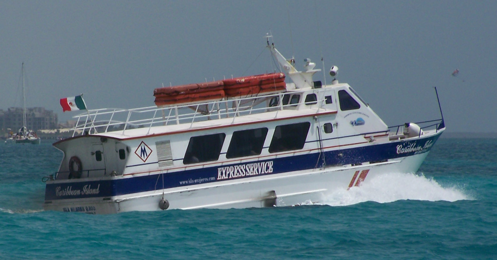
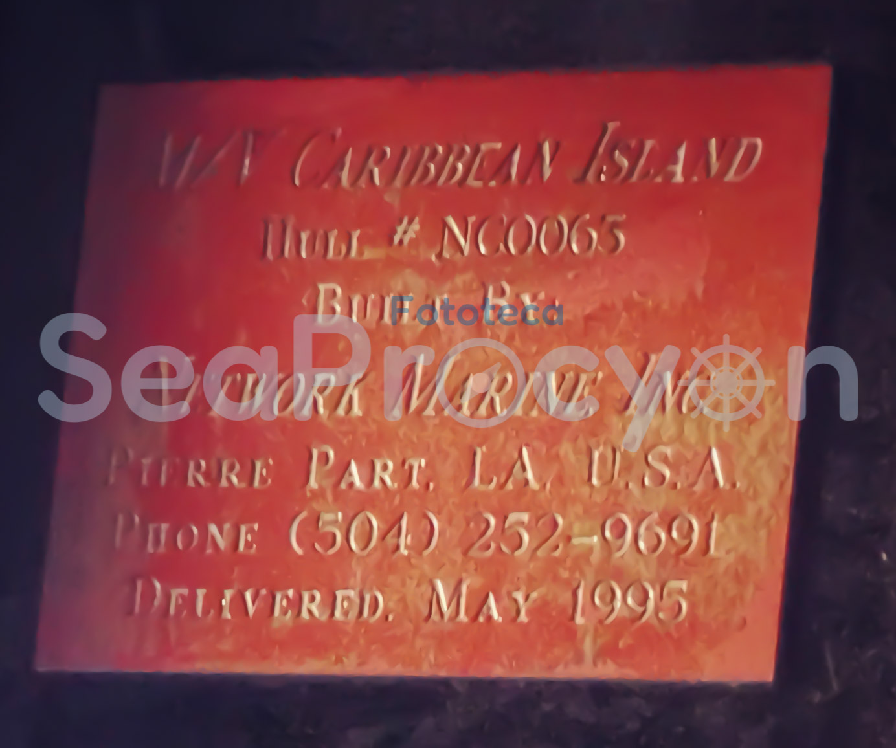
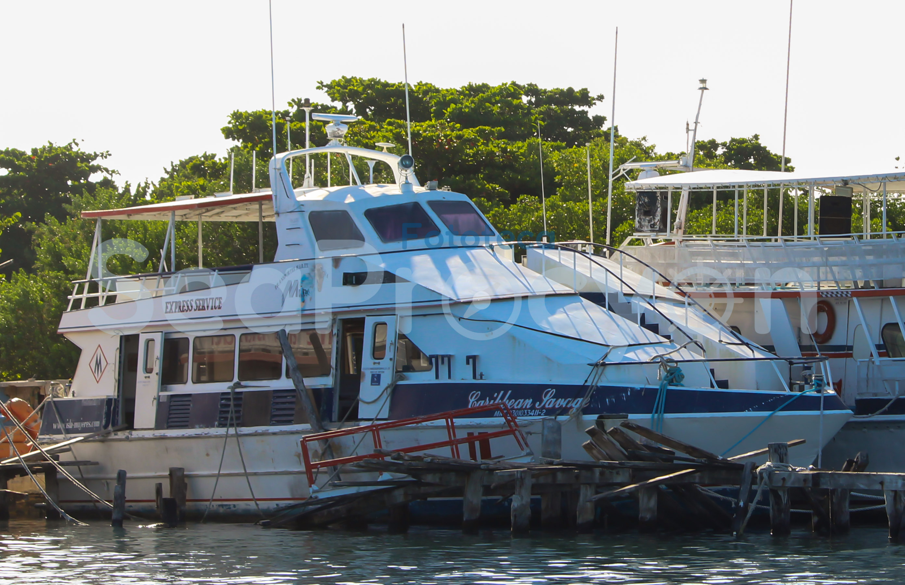

La primera naviera durante 60 años opero la ruta Isla Mujeres a Puerto Juárez desde 1954 y introducir en los años 90´s este servicio en la isla el “Servicio Express”
La “Sultana Del Mar” la embarcación más grande construida en la isla en 1964 por lo cual es el icono y barco insignia de la construcción naval.
Opero entre 1956 a 2016
| Foto | Nombre del barco | Clase | No. de Matricula | IMO | Puerto de Registro | Astillero | Año de Construcción | Otros nombres | Estado de la Embarcacion | Ilustración | Observaciones |
|---|---|---|---|---|---|---|---|---|---|---|---|
|  | Caribbean Island | Express Service | 2301033311-7 | Dato Desconocido por favor contacta a seaprocyon@gmail.com | Isla Mujeres, Quintana Roo | Network Marine inc. | Mayo 1995 | -- | Retirado | Si |  Placa del barco indica que fue entregado como Casco N° NC0063 en Mayo de 1995 en Pierre Part, Louisiana por Network Marine Inc. (El Astillero cerro en 2002 según información en Google). |
|  | Caribbean Savage | Express Service | 2301033411-2 | Dato Desconocido por favor contacta a seaprocyon@gmail.com | Isla Mujeres, Quintana Roo | Network Marine Inc. (Por favor confirmar el dato en Seaprocyon@gmail.com) |
Dato Desconocido por favor contacta a seaprocyon@gmail.com | Dato Desconocido por favor contacta a seaprocyon@gmail.com | Retirado | si | Almacenado desde 2009 o 2010, el barco cuenta con propulsión a chorro conocido como "Waterjet". NOTA DE LA PÁGINA: Si alguien cuenta con la fotgrafía de la entrega del barco en pruebas navegando en un rio que se encontraba exhibida en la oficina por favor de enviarla a seaprocyon@gmail.com |